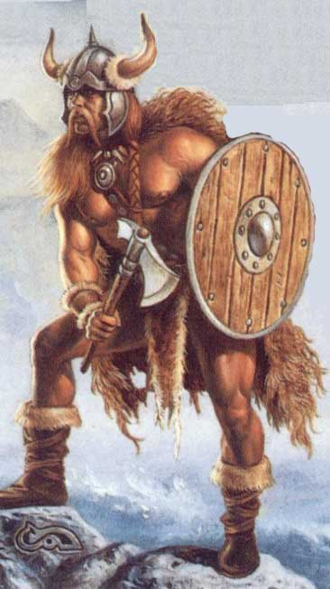

Questi razza di giganti appare dalle fattezze umane ma dalle enormi dimensioni. I Firbolg portano capelli lunghi e barbe folte. Inoltre sono caratterizzati dall'avere una pelle ruvida ed estremamente dura e resistente che gli conferisce una incredibile protezione naturale.
Tipicamente i Firbolg vivono in foreste remote o su alte montagne. Non amano trascorrere tempo con creature di altre razze di cui normalmente non si fidano. Una volta conquistata la fiducia di un firbolg (e non è cosa facile), però, costui diventerà un fedele amico per tutta la sua vita.
A volte divengono avventurieri e vanno in esplorazione per accrescere le proprie conoscenze, per trovare oggetti magici e per impossessarsi di rari tesori. Sono valenti combattenti e usano strategie di battaglia che prevedono partecipazione di gruppo.

Limiti
di classe per la razza:
Fighter 12° livello
Cleric (Forze della Natura) 9° livello
Possibilità di multi-classe:
Fighter/Cleric
Allineamenti consentiti:
Legale Neutrale, Legale Buono, Caotico Buono, Caotico Neutrale
Categorie di età :
Base Age 40 + 5d6
Childhood
1 - 15 years
Adolescence
16 - 29 years
Adulthood
30 -
99 years
Middle Age*
100 - 132 years
Old Age**
133 - 199 years
Venerable Age***
200 + years
Maximum
Age
200 + 3d10 years
Dimensioni e peso :
Si considerano creature
Large, quindi ottengono un bonus di +2 punti ferita a dado vita/livello e
la loro iniziativa di movimento è pari a +6 (+3 iniziativa di mezzo movimento).
Sono alti 280 (le femmine 250) + 3d20 cm. e
pesano 330 (le femmine 290) + 3d20 kg.
Punteggi di Abilità :
Bonus: +
2 forza, + 1 costituzione
Malus: – 2 destrezza, – 1 carisma
Inoltre i limiti minimi e massimi sono i seguenti :
|
Abilità |
Punteggio Minimo
Razziale |
Punteggio Massimo
Razziale |
|
Forza |
14 |
19 |
|
Intelligenza |
6 |
18 |
|
Saggezza |
8 |
18 |
|
Costituzione |
11 |
18 |
|
Carisma |
3 |
15 |
|
Destrezza |
3 |
16 |
Caratteristiche speciali :
Armi
giganti: Non possono usare armi
a una mano di creature medium ad eccezione delle lance e dei giavellotti che se
lanciate ottengono un bonus di 10 metri alla gittata.
Pelle
Spessa:
Hanno una Classe
Armatura naturale pari a 3, possono utilizzare scudi ma non possono
utilizzare alcun tipo di armatura.
Appetito Bestiale: Essendo creature di dimensioni Large devono mangiare una quantità tripla di cibo giornaliero rispetto ad un umano medio.
Resistenza
al Magico: Hanno una Resistenza
alla Magia Innata pari al 15 % (non annullabile,
in alcun modo, anche per gli incantesimi e gli effetti magici benefici).
Simbiosi
con le Rocce: Hanno inoltre i
seguenti poteri magici che lanciano come se fossero magie (con componente Vocale
e Somatico) ad un livello di lancio pari al loro livello di esperienza :
3th
level : Medium Evocation of the Rock (Evocation
earth) 1/giorno
Range: 50 m.
Components: V, S
Duration:
Instantaneous
Casting Time: 4
Area of Effect: One Creature Saving Throw: None
Si tratta della
versione intermedia delle evocazioni basiche dei blocchi di granito utilizzata
come arma di offesa. Questa magia evoca un blocco di granito dal diametro di 60
cm. che viaggiando verso il bersaglio lo colpisce ad alta velocità
provocandogli 2d6 + 3 danni da impatto per poi svanire nel nulla. Questa magia
è anche in grado di fare danni alle strutture, come gli edifici.
5th
level : Medium Evocation of the Rock (Evocation
earth) 1/giorno (cumulabile
con il precedente)
7th
level : Tarsis Rain of Stone (Evocation earth)
1/giorno
Range: 10 yards
per level
Components: V, S
Duration:
Instantaneous
Casting Time: 4
Area of Effect:
sfera di 10 metri di raggio
Saving Throw: ½
This
spell evokes a little storm of stones in the area of effect. The spell causes
1d8 HP + 2 HP of damage per level of the wizard to all within the
area, to a maximum of 1d8 + 16. A successful saving throw ( mod. by dex. ) ½
the damage.
9th
level : Rockskin (Alteration) 1/giorno
Range: 0
Components: V, S
Duration: Special
Casting Time: 1 round
Area of Effect:
The Caster
Saving Throw: None
The recipient of this
spell is completely immune to one non‑magical attack. Only one rockskin or
similar spells ( like stoneskin ) can be cast on one creature, any next one
cancelling the previous one. This spell can be dispelled and to remove it is
necessary a successful non-magical attack on the recipient ( in this it’s
different from Stoneskin ).
I
Firbolg devono raggiungere un ammontare di punti esperienza pari al 154%
di quelli che dovrebbero normalmente raggiungere per la classe scelta..